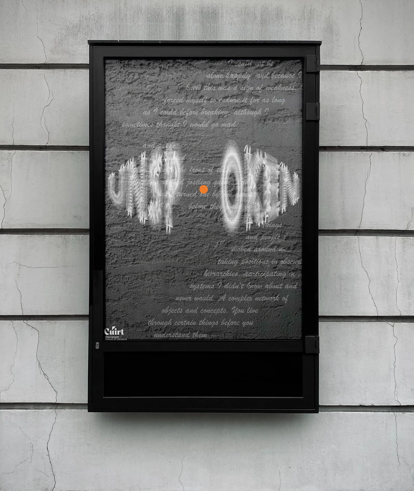
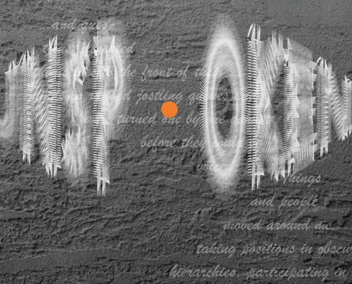
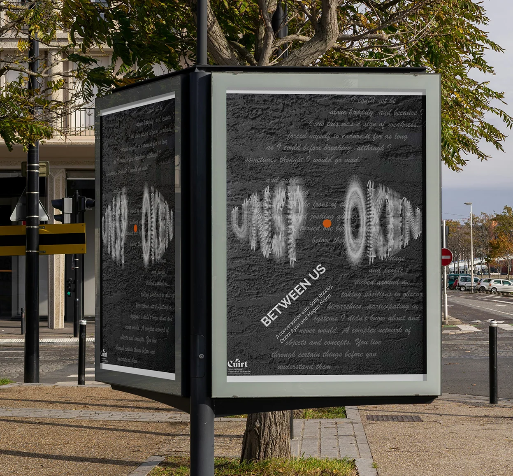
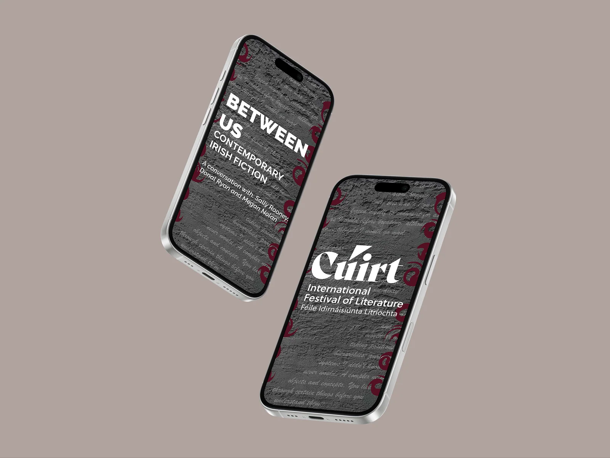

College project · Poster design
Between The Lines
Layered handwriting and distorted letterforms meet in a monochrome street poster.

Project brief
Create a typographic response to Between Us — Contemporary Irish Fiction, a Cúirt event featuring Sally Rooney, Donal Ryan and Megan Nolan. I focused on feelings that remain unspoken.
My role
Designer (student)
Process & sketches
I used fragments of text about unanswered questions and being alone to guide the line breaks, spacing and disrupted alignments.
Design decisions
Uneven spacing makes the letters seem to move forward and pull back. A single orange mark punctuates the muted composition, while clear event lettering gives the reader a point of entry.
Outcome
The visual response extends from street posters to mobile event graphics.
Design details





